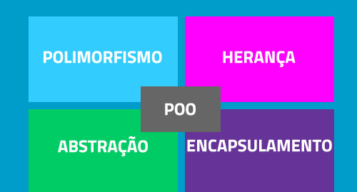

Programação Orientada a Objeto(POO) é um modelo de projeto e programação de software baseado na abstração digital do mundo real, através da composição e interação entre diversas unidades chamadas de obejtos, possuindo classes (representando objetos reais contendo identidade, propriedades e, métodos); baseado em quatro principais componentes da programação: abstração digital, encapsulamento, herança e, polimorfismo.
Dentro do POO, as classes mais comuns: usando um objeto que pode ser manipulado, criado a partir de uma classe através do instanciamento. Estes possuem métodos que modificam seus próprios dados, definindo o tipo do objeto. A classe determina o comportamento (métodos), estados possíveis (atributos) e, o relacionamento com os outros objetos.A maior alternativa as classes é o uso de protótipos, onde objetos são cópias de outros, onde apenas a herança simples é implementada pela cópia.
De fato, o paradigma "orientado ao objeto" tem origem nos estudos da cognição e influenciou a inteligência artificial e a linguística, dada a relevância para a abstração de conceitos do mundo real. A MOO é considerada a melhor estratégia para diminuir o "gap semântico" (o hiato entre o mundo real e a representação digital dele), e facilita a comunicação das partes interessadas no modelo ou software (e.g. o modelador e o usuário final) na medida em que conceitos, terminologia, símbolos, grafismo e estratégias, são, potencialmente, mais óbvios, intuitivos, naturais e exatos.[1]
Resposta
Nome:
Sobrenome:
Personalidade: